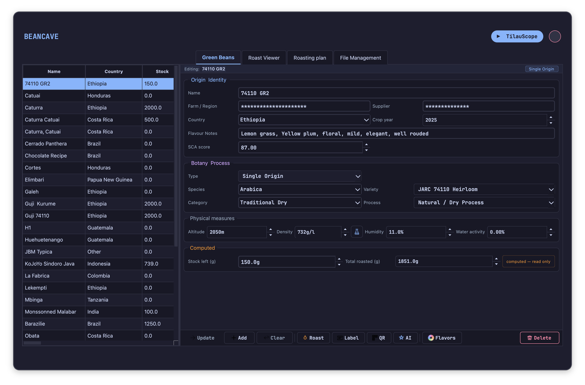
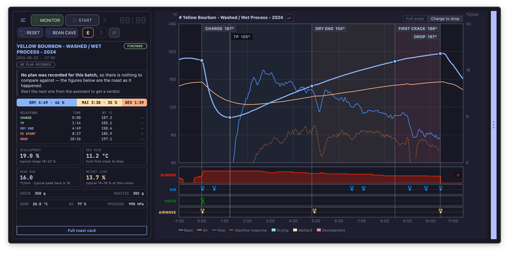
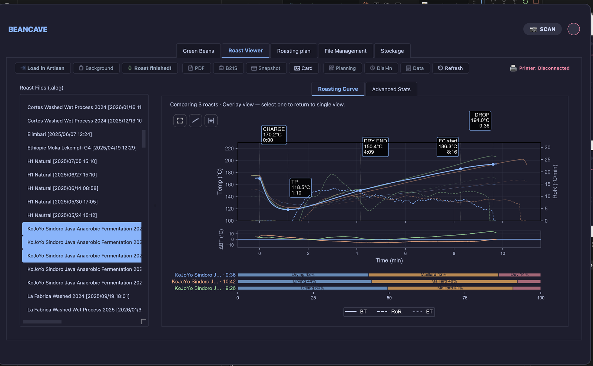

Decide while it matters
See the one action that matters now — heat, air, charge or drop — with timing based on where this roast is actually heading.
Live phase verdicts · drop countdown · crash & flick warningsRoast intelligence · built on Artisan
TilauScope turns the data already inside Artisan into useful decisions: a plan before charge, clear guidance while the drum turns, and a better starting point for the next batch.
Reduce heat to 70%
in 12 seconds · first crack expected 09:24
A useful layer, not more noise
TilauScope is designed for home and small-batch roasters who want Artisan’s depth without having to interpret every signal alone, every time.
See the one action that matters now — heat, air, charge or drop — with timing based on where this roast is actually heading.
Live phase verdicts · drop countdown · crash & flick warningsBuild the next plan from your own comparable roasts, then see whether the batch is ahead or behind in seconds.
Same bean · similar batch size · your machineConnect green-coffee identity, roast result, colour, tasting and brew so each batch teaches the next one something useful.
BeanCave · roast comparison · brew planningA roast in motion
This live illustration is generated in the browser from one roast timeline. Watch the advice change as the batch moves from charge to drop.
One workflow, end to end
BeanCave keeps origin, process, density, stock, water activity and tasting notes together. Pick the coffee and TilauScope can judge the batch before it starts.

Artisan keeps recording every probe and event. The TilauScope panel adds a focused view of the phase, the deviation from plan and the next useful intervention.

Overlay comparable roasts, align their milestones and read the result against your own history. Correct a late mark, add colour and tasting, then feed the outcome into the next plan.

Written on the bench
A radiant drum is not driven like a gas one, and most of the advice you will find online was written for a gas one. This is the whole method, measured on 87 of my own roasts and ten from another operator: what each control can really do, three templates for light, medium light and medium, and the pair of numbers that decides the colour in the cup.
Read the methodArtisan does. TilauScope adds.
TilauScope is a modified version of Artisan Roaster Scope. Its curve engine, device support, recording and expert controls remain available underneath.
The added layer organizes the work around the roaster: prepare, guide, review, repeat. Switch to Expert and the full Artisan control panel returns.
Explore the documentationBuilt for a real roasting bench
Dedicated integrations extend Artisan’s own broad device support, so measurements can inform the workflow instead of living in separate apps.
Free software · AGPL v3
Download TilauScope for macOS or Windows. Keep your data local, keep Artisan’s depth, and add a guide that learns your roasting bench.
Signed and notarised on macOS · installer on Windows · no account requiredTilauScope is a modified version of Artisan Roaster Scope, copyright Marko Luther and the Artisan contributors. It is not affiliated with, nor endorsed by, the Artisan project. Please report TilauScope problems on the TilauScope tracker.